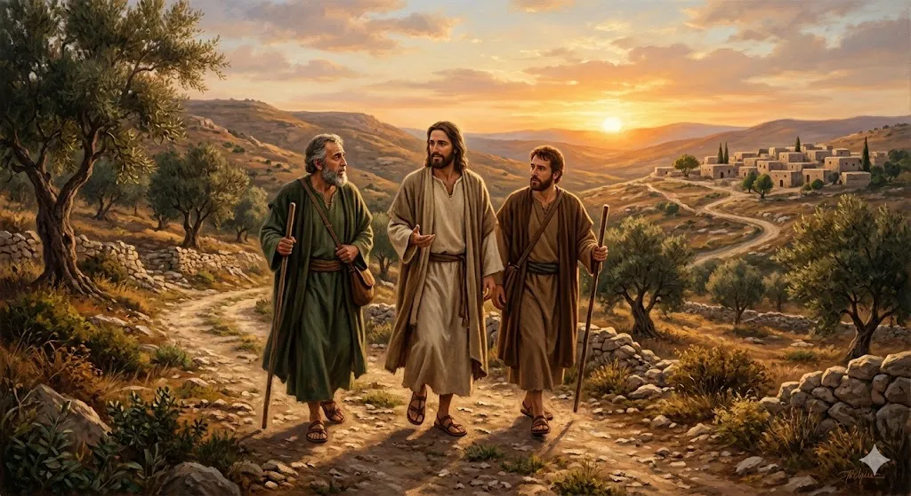
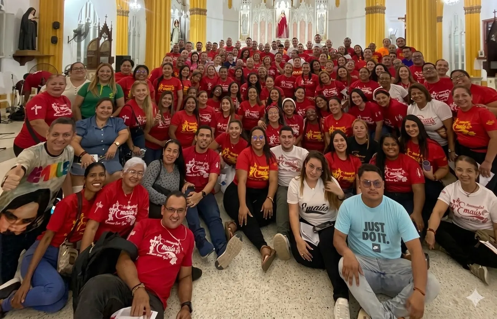
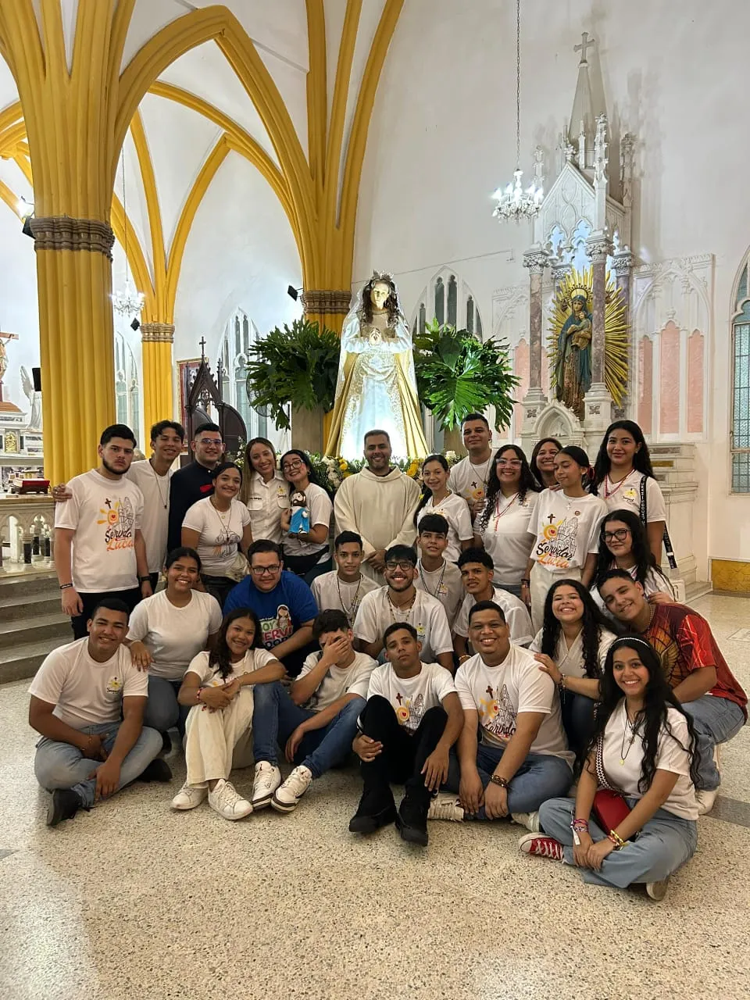
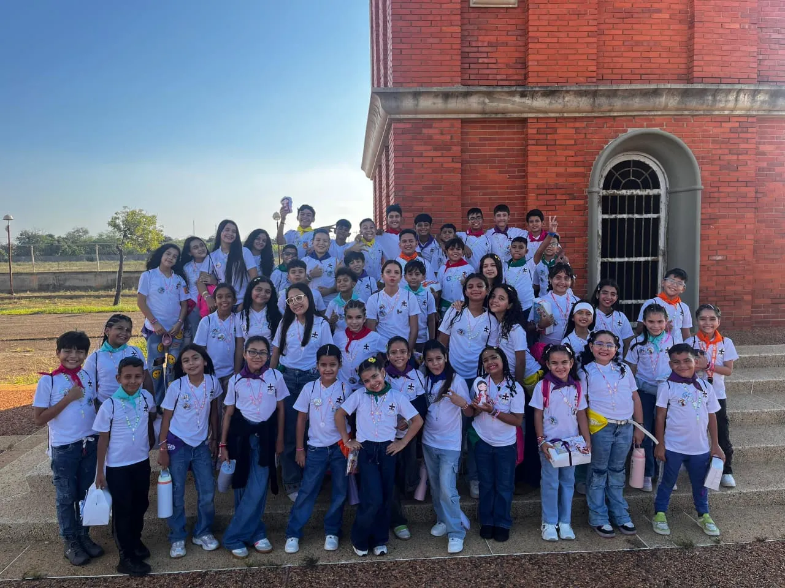

"¿No ardía nuestro corazón mientras nos hablaba por el camino?" (Lucas 24, 32)
El Camino de Emaús es un apostolado parroquial impulsado por laicos, diseñado para propiciar un encuentro personal, profundo y transformador con Jesucristo Resucitado.
Inspirado en el pasaje del Evangelio de San Lucas, este retiro de fin de semana nos permite hacer una pausa en el ajetreo diario para reconocer a Jesús al partir el pan, sanar heridas y regresar a nuestra vida cotidiana con el corazón ardiendo de fe, listos para servir en nuestra comunidad de Santa Lucía.


Retiros separados para hombres y mujeres. Un espacio de hermandad adulta para renovar la fe, la familia y el compromiso cristiano en el mundo.

El retiro adaptado para jóvenes. Una experiencia vibrante que les ayuda a escuchar la voz de Dios en medio del ruido de la juventud actual.

Un encuentro lleno de amor, juegos y dinámicas pensado especialmente para que los niños experimenten la alegría de ser amigos de Jesús.
El retiro es solo el comienzo del camino. Nuestra espiritualidad se vive en el servicio activo a la parroquia, apoyando en las misas, colaborando con Cáritas, y manteniendo una vida sacramental frecuente. Los hermanos de Emaús nos reconocemos por la alegría, el abrazo fraterno y la disposición incondicional para la obra de Dios.
Nos reunimos semanalmente para formarnos y organizar los próximos retiros.
Días: Jueves
Hora: 7:00 PM
Días: Miércoles
Hora: 7:00 PM
Si sientes que necesitas un respiro espiritual y renovar tus fuerzas, te invitamos a caminar con nosotros. ¡Jesús te está esperando!
Pedir Información del Próximo Retiro →